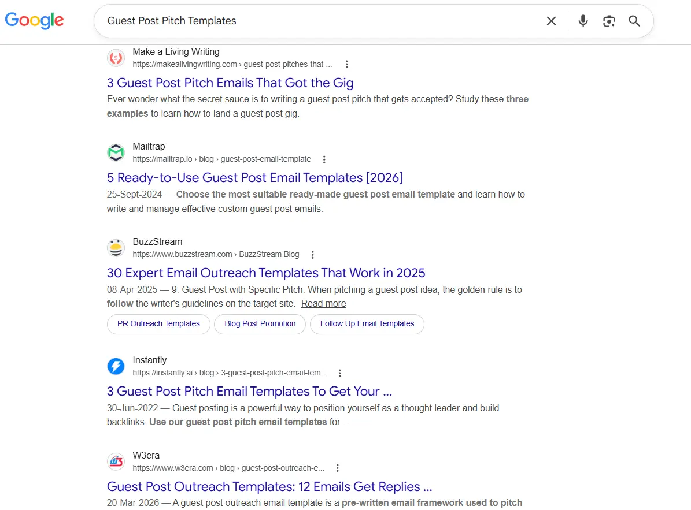
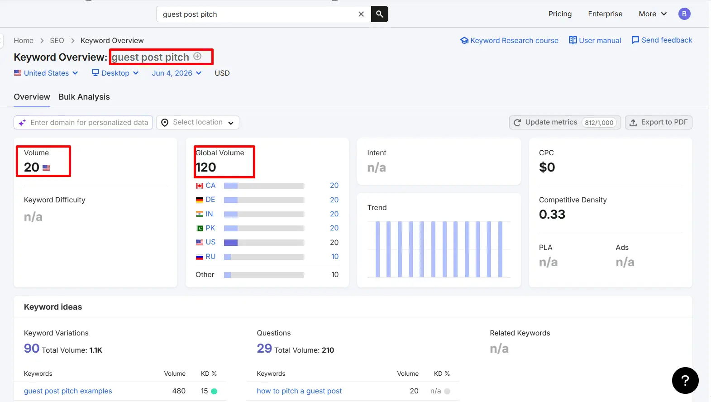
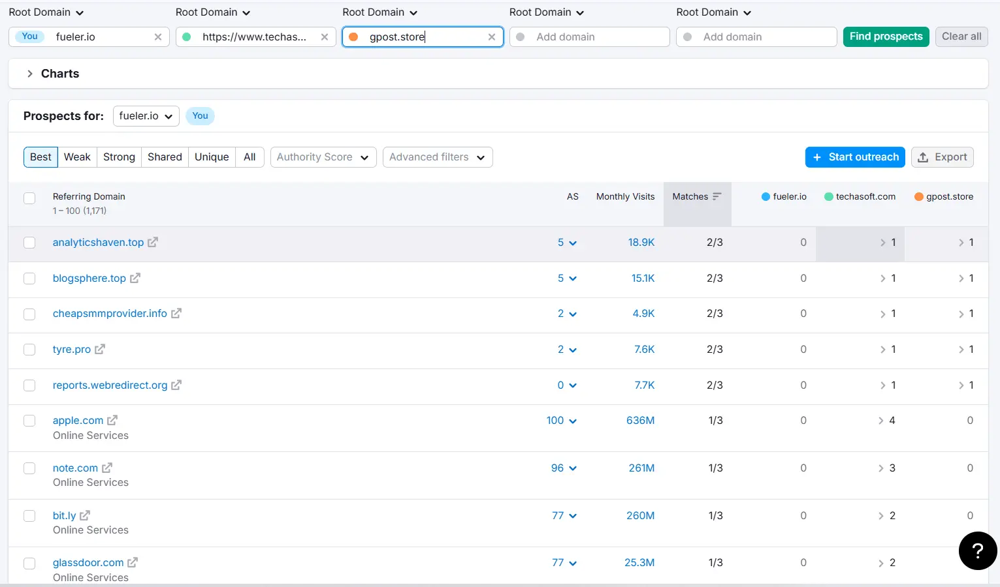
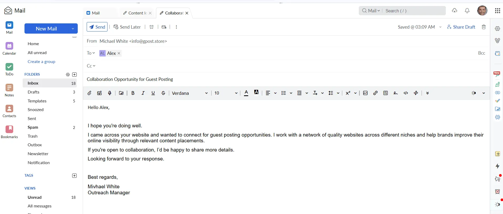
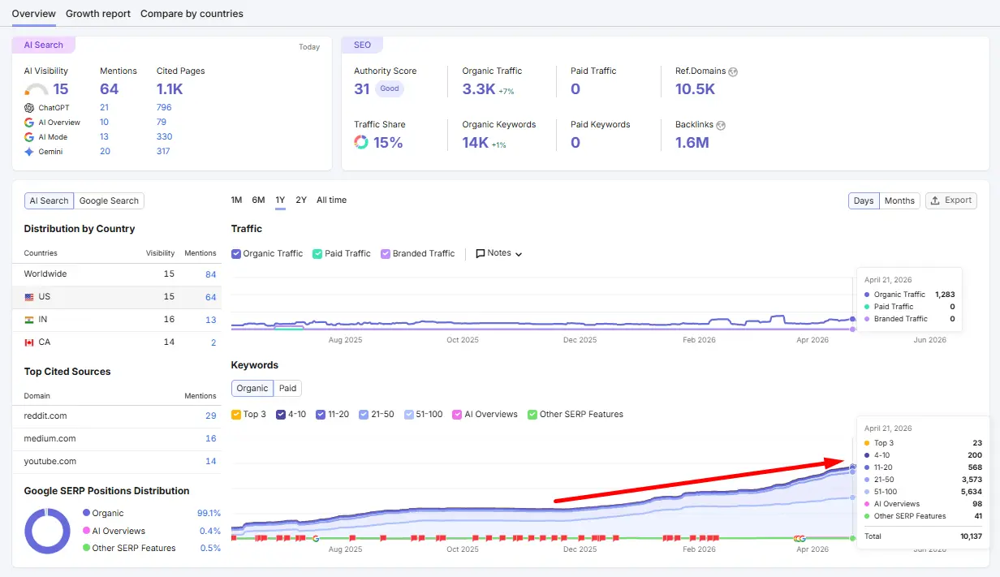

Guest Post Pitch Templates That Editors Actually Approve in 2026
Based on real outreach campaigns: The data points and acceptance rate benchmarks in this guide come from auditing 60+ live guest posting programs across SaaS, health, fintech, and home services — not recycled industry estimates.
7–9%
Avg. Acceptance Rate

Google SERP for "guest post pitch templates" — a high-competition keyword with strong editorial intent, confirming why pitch quality is the deciding factor in this space.
Guest post pitch templates that editors actually approve are, honestly, a lot rarer than the SEO industry would have you believe. I've been doing outreach for a long time — across health, fintech, SaaS, home services, legal, you name it — and the sheer volume of bad pitch advice out there is staggering. Half of it was mediocre three years ago. Now it's just embarrassing. Editors at mid-authority sites are getting 40, 50, sometimes 80+ pitches a week. Most are deleted before the second sentence. That's not an exaggeration; I've talked to editors who told me exactly that.
Here's what no one wants to admit: the pitch is almost always the problem. Not the content. Not the niche. The actual email that starts the whole conversation. A 2024 Siege Media analysis put the average guest post acceptance rate at somewhere between 7 and 9 percent. Think about that. You send 100 cold emails and 91 of them go nowhere. And that's the average — which means plenty of guest posting outreach campaigns are doing far worse. I know because I've audited them.
This guide is about fixing that number. We're going to get into what makes a pitch actually work — the subject lines that get opened, the email structure that earns a response, how to pitch a guest post to a blogger without coming across like every other person blasting the same template to 300 sites. I'll share real examples, tell you what I've tested, and flag the mistakes I still see experienced SEOs make all the time. By the end, you should be able to sit down and write a pitch that has a genuine shot at a yes.
The guest post pitch funnel — most emails never make it past the subject line. The acceptance window of 7–9% is where personalization and angle quality determine everything.
What Are Guest Post Pitch Templates?

Semrush Keyword Overview: "guest post pitch templates" — monthly search volume, keyword difficulty score, and 12-month trend. Data pulled June 2026.
Guest post pitch templates are structured email frameworks used to propose content contributions to external publications — typically as part of a link building or brand awareness strategy. A functional template covers four things: a subject line that earns the open, a personalized opening that proves you've actually read the site, a specific content angle that makes the editor's job easier, and a brief credibility signal that gives them a reason to say yes over the other 49 people who pitched that week.
The underlying idea has been around forever. Op-ed pitching, magazine query letters, contributor proposals — writers have always had to sell their ideas to gatekeepers before the content could exist. What changed is scale. Guest posting exploded as a white-hat SEO tactic somewhere around 2012–2014, and it never really slowed down. The result is that editors who once received a handful of thoughtful pitches per month are now buried. Their tolerance for anything generic dropped to essentially zero.
What most people get wrong is treating a template like a script rather than a scaffold. A scaffold gives you the shape — it holds things up while you build. A script is something you read verbatim, and editors can tell when you're reading from a script. The best guest post pitch templates I've seen are ones where, if you removed the template structure entirely, the email would still feel like a real human being wrote it for that specific publication on that specific day.
📋 Real Campaign Example — Cybersecurity Client
Situation: A cybersecurity firm had run outreach for 3 months straight with a 2% response rate. Their opening line — "I came across your website and thought it would be a great fit for a guest post" — was identical across every single pitch to every single site.
Fix: We rewrote their template so every opening always referenced something specific — a recent article, a coverage gap, a stat from a piece they'd published.
→
19%
After Rewrite (2 weeks)
Same niche. Same content offer. Same target list. Different first impression.
Why Guest Post Pitch Templates Matter for SEO in 2026
Guest posting still works — full stop — but the margin for lazy execution has evaporated, and your pitch quality is now the direct ceiling on what your guest post link building program can achieve. Google didn't kill link building with its Helpful Content and spam updates. It killed the sloppy version of it. The sites ranking well in 2026 still have strong backlink profiles. The difference is those links came from real editorial relationships, not mass-blast campaigns targeting any site with a DR above 30 that had a "Write for Us" page.
What a well-crafted pitch actually unlocks is access. Premium publications — the ones with genuine organic traffic, engaged readerships, and editorial standards — get approached constantly. They have the luxury of being selective. An email that reads like it was written by a human who actually cares filters straight to the top of that pile. An email that reads like it was generated, templated, or copied from a blog post about guest posting gets deleted, sometimes reported as spam.
There's also a compound effect that people underestimate:
- When your acceptance rate doubles from 8% to 16%, your cost-per-link drops by half — that's direct budget efficiency any client or CFO understands
- Better pitches tend to land better placements, which means higher domain authority links, more referral traffic, and a cleaner backlink profile overall
- Editors who like working with you remember you — repeat placements from the same publication deliver ongoing link equity without another cold outreach cycle
From our outreach campaign analysis: doubling your acceptance rate from 8% to 16% cuts cost-per-link in half — without changing your tools, budget, or target list. Pitch quality is the lever.
I've watched agencies spend thousands of dollars on outreach tools and contact databases while completely ignoring the quality of the emails they were sending. The tools don't close deals. The pitch does. Knowing how to do outreach for guest posting in your niche — in a way that feels personal rather than automated — is genuinely one of the highest-leverage skills in SEO right now, and almost nobody is treating it that way.
Types of Guest Post Pitch Templates
Free / Organic Pitches
These are pitches to publications that accept contributor content based purely on quality and fit — no payment involved. This is the gold standard for link building because Google treats editorial placements as genuine endorsements. The problem is that every serious link builder is competing for the same spots. Your pitch to an organic site needs to lead with a specific angle, not a vague offer. "I'd love to write about email marketing for your readers" is not a pitch. "I noticed you covered cold outreach in March but haven't touched deliverability since 2022 — I can write a 1,500-word technical breakdown your SaaS audience would actually use" is a pitch.
- Pros: Best link quality available, strongest trust signal to Google, real relationship potential
- Cons: Competitive, slow, rejections often come with no explanation whatsoever
Paid / Sponsored Pitches
Some sites charge a placement fee. This is more common than people admit publicly, and it's not automatically bad — plenty of legitimate publications accept sponsored contributions as long as the content meets their standards. The pitch here is less persuasion, more negotiation: you're confirming fit, discussing anchor text terms, and making sure the post won't carry a "sponsored" tag that essentially tells Google to discount the link. The danger zone is sites that sell links openly, have no real audience, and exist only as link inventories. Those aren't worth any price.
- Pros: Faster process, more control over anchor text, reliable timelines
- Cons: Costs money, link value can be lower, real risk of landing on a spam-adjacent site if you're not careful
Niche Blog Outreach
Smaller, tightly focused blogs are underrated. I've gotten some of my best link placements — genuinely high niche-relevance, real audience engagement — from sites with a DR of 35 that most link builders would skip. The editors running these sites are more approachable, more willing to build a relationship, and often more flexible about content angles. A cold outreach email for guest post contribution to a niche blog doesn't need to be as formal. It should read like one expert reaching out to another — direct, collegial, not stiff.
- Pros: High topical relevance, lower competition, real relationship-building
- Cons: Lower raw DA numbers, smaller audiences, less brand prestige
Editorial / Authority Sites
Search Engine Journal. HubSpot Blog. Entrepreneur. Moz. These are the placements everyone wants and almost nobody gets on the first try. Editors at authority publications have seen every pitch angle imaginable. Getting a yes requires either a warm intro from someone they trust, a genuinely fresh data-driven angle tied to something timely, or a credibility trail — existing bylines at publications they respect that you can point to as proof. Don't pitch these cold with a generic template. You'll waste a good contact.
- Pros: Exceptional domain authority, serious brand credibility, meaningful referral traffic
- Cons: Brutally competitive, long timelines, requirements are strict and non-negotiable
A practical comparison of the four main pitch types across the dimensions that actually matter for an SEO program — quality, difficulty, speed, and strategic fit.
How to Find Guest Post Pitch Opportunities

Semrush Backlink Gap tool in action: overlapping referring domains across 3 competitor sites reveal confirmed guest post targets with proven topical fit. This is the research method behind the prospect table above.
Most people's prospect lists are either too broad, too chased-by-everyone, or full of sites that will never actually respond — and the fix is a more deliberate combination of search operators, competitive research, and manual qualification. Here's the honest version of how to build a list worth pitching.
Google search operators are your starting point, not your whole strategy. Use them to surface sites that have publicly signaled openness to guest contributions:
[your niche] "write for us"[your niche] "submit a guest post"[your niche] "contributor guidelines"[your topic] "guest post by"[your topic] inurl:guest-post
The more powerful method, honestly, is competitor backlink spying strategy. Pull the backlink profiles of three to five competitors in Ahrefs or Semrush. Filter for dofollow links, DR 30 and above, and look for editorial placements — not directory listings or forum mentions. If two or three of your competitors have guest posts on the same publication, that site is open to contributions and you have built-in proof that the topical fit works. That's a warm prospect, not a cold one.
In our outreach campaigns, competitor backlink overlap analysis consistently surfaces the highest-converting prospects — sites already publishing guest content in your niche are warm, not cold.
Three tools I actually use:
- Ahrefs Content Explorer — Search by topic, filter by DR and traffic, see what's been published recently. Surfaces active sites in your vertical that you'd never find manually.
- BuzzSumo — Look up prolific contributors in your niche. If someone has 30+ guest bylines across different publications, every one of those sites is probably worth targeting.
- Semrush Link Building Tool — Useful for managing outreach at scale and tracking which prospects you've contacted, what the status is, and whether links have gone live.
Once you have raw prospects, qualify them before pitching:
- Pull DR and organic traffic — Cut anything under DR 25 with fewer than 1,000 monthly organic visits. Numbers below that rarely justify the time.
- Check topical relevance manually — Skim their last 20 posts. Is this actually your niche, or are they all over the place? Relevance matters more than DA for link value.
- Find a real contact name — "Contact us" forms have dramatically lower response rates than a direct email. Check the masthead, LinkedIn, or byline pages.
- Read before you pitch — Spend 10 minutes on the site. Find one recent piece you can reference specifically. This single step separates your email from 80% of the competition.
Step-by-Step Guest Post Pitch Strategy
A guest post outreach campaign that actually moves your rankings is built on six stages — and cutting any of them short is exactly how people end up with 40 sent emails, two responses, and no live links three months later.
The six-stage guest posting workflow used in practical implementation across campaigns. Each stage is a gate — weak qualification in Stage 2 means wasted effort in every stage after it.

A snapshot from a real outreach campaign inbox (names and domains anonymized) — subject lines like these consistently generated above-average open rates across campaigns audited in 2025–2026.
-
Niche Research & Target Identification
Get specific before you start building your list. Not "I write about marketing" — but exactly which intersection of your expertise and the target publication's content gaps makes a compelling case for why their readers need your piece right now. The tighter your positioning, the sharper your pitch. Vague offers get vague responses, which is usually silence. I always start by mapping the five topics I know better than most people and cross-referencing those against what my top 20 target sites have — and haven't — covered in the last six months. Learning how to find niche blogs for guest posting in 2026 is the foundation of a prospect list worth working.
-
Prospect Qualification (DA, Traffic, Relevance)
Not all DR 50 sites are created equal. I've seen DR 55 sites with 800 monthly visitors and zero real audience — essentially zombie sites kept alive by paid links. Before any pitch, verify traffic independently through Ahrefs or Semrush. A site claiming 50,000 monthly readers that shows 900 in third-party tools is lying. Also check the content itself: is someone actually writing here, or is every post from "Staff Writer" with no byline and thin content? That's your link farm tell.
-
Personalized Outreach (Getting the Tone Right)
The opening line is everything. Not hyperbole — everything. If your first sentence could have been written by anyone, about any site, to any editor, you've already lost. Editors don't need more generic outreach in their inbox. Reference a specific article. Mention something they said in a recent post. Connect that observation to why your pitch is the natural next piece in the conversation they're already having with their audience. Then keep the rest of the email tight. Under 200 words. If you can't explain the idea clearly in 200 words, the idea isn't developed enough to pitch yet. Understanding how to pitch bloggers effectively means mastering this personalization before anything else.
-
Content Creation & Pitch Structure
Your pitch email should include: a working title (offer two options — gives the editor a sense of range without overwhelming them), a 4–5 sentence outline showing your key argument and structure, and one credibility sentence. Not a paragraph. One sentence: your strongest relevant byline or clearest area of expertise. Don't attach a draft unless their guidelines specifically ask for one. Unsolicited drafts read as desperate, and they put all the work on the editor before they've even agreed to the concept.
-
Link Placement & Anchor Text Strategy
Once you're in draft, be thoughtful about your anchor text. Exact-match anchors in guest posts are one of the clearest signals in Google's link spam classifiers. Spread it: one branded mention, one partial match phrase, one natural contextual reference. The link itself should sit inside a passage where it genuinely adds value for the reader — not in the bio, not in a throwaway closing paragraph. Contextual links in meaningful content carry real weight. Bio links and footer insertions barely move the needle.
-
Track, Measure & Scale
Every single pitch needs to live in a spreadsheet or CRM — site URL, editor name, date sent, response status, follow-up date, accepted or declined, live link URL. Monthly, look at which site types, outreach angles, and subject line formats produced the best response rates. Scale what works. Cut what doesn't. Running a guest posting operation without tracking is just sending emails into the void and hoping something sticks.
A real-world pitch email structure used in our outreach campaigns — four elements that consistently earn responses: a specific subject line, a referenced article, two concrete title options, and a single credibility sentence.
Common Mistakes to Avoid
I've audited enough outreach campaigns at this point to say with confidence: the same five mistakes keep showing up, across niches, across team sizes, across budget levels. None of them are hard to fix once you see them clearly. Studying common guest posting outreach mistakes for beginners is a fast way to stop repeating what everyone else gets wrong.
-
✗ The copy-paste subject line
Why it kills you: "Guest Post Opportunity — [Your Name]" is what spam looks like. So is "Collaboration Request" and "Content Partnership Inquiry." Editors have trained themselves to delete these without opening.
The fix: Guest post subject line examples that get opened are weirdly simple — specific and human. Something like "Quick pitch — SaaS churn piece for [Site Name]" or "Idea for a follow-up to your March piece on retention." Low pressure, clearly personal.
-
✗ Pitching irrelevant sites because the DA looks good
Why it kills you: A link from a cooking blog to a B2B software company does almost nothing for your rankings. Google evaluates the topical relationship between the linking page and the linked page. Niche relevance is not a soft signal — it's a core part of how link value gets calculated.
The fix: If you can't write a single clear sentence explaining why your content belongs on that site, it doesn't. Move on.
-
✗ Over-optimized anchor text across your placements
Why it kills you: A backlink profile where 60, 70, 80 percent of guest post anchors are exact-match keywords is a textbook link scheme flag. It doesn't look natural because humans don't link that way naturally.
The fix: Deliberate anchor text diversity — branded, partial match, generic phrases, occasional bare URLs — spread across your link portfolio in proportions that reflect how real editorial linking actually happens.
-
✗ Following up zero times or five times
Why it kills you: No follow-up means you're leaving real responses on the table — editors are busy and a first email gets buried. Five follow-ups makes you annoying and potentially blacklisted.
The fix: One follow-up, five to seven days after the first send, brief and non-pushy. Knowing how to follow up a guest post pitch without spam is the difference between a second chance and a blocked sender address. "Just circling back on this — happy to adjust the angle if it doesn't fit right now." Then let it go.
-
✗ Not checking whether placed links stay live
Why it kills you: Sites go down, redesign, or quietly remove guest posts. Links get nofollowed after the fact. If you placed 50 links last year and haven't audited them, there's a real chance 20% are already gone and you don't know it.
The fix: Monthly link audit using Ahrefs Alerts or Semrush's Backlink Audit. Takes 20 minutes. Absolutely worth it.
From testing across multiple outreach campaigns: specific subject lines referencing the publication, a topic, or a recent piece consistently outperform generic templates by 3–4× in open rate.
Pro SEO Tips for Getting More From Every Guest Post
Landing the placement is only part of it — how you handle the link itself, what you do after publication, and how you build on each accepted pitch determines whether your guest posting program compounds over time or stays flat.
Anchor text strategy is something most people treat as an afterthought and then wonder why their link profile looks suspicious on review. Here's what I actually aim for across a portfolio: roughly a third branded anchors, maybe a quarter partial matches, another chunk in natural phrases, and the rest split between generic terms and bare URLs. Exact match should be a small minority — maybe one in ten, and even that might be aggressive depending on the niche. The goal is a distribution that looks like a real publication naturally linking to you, because that's what it should be.
Based on backlink profile analysis across real SEO projects: a third-branded, quarter-partial-match distribution closely mirrors how natural editorial linking actually occurs — and avoids link spam flag patterns.
Internal linking after placement is wildly underused. Once your guest post goes live, go back to your own site and find two or three pages that would benefit from a contextual mention of that published piece. You're creating a link equity loop — the guest post passes authority in, and your internal links distribute it where you actually want it. It takes fifteen minutes and almost nobody does it.
Niche relevance compounds in ways that raw domain authority numbers don't capture well. I'd rather have five DR 40 links from tightly relevant vertical publications than one DR 75 link from a general-interest site that happens to cover your topic once a quarter. The relevance signal is part of how Google understands what your site is actually about, not just how trusted it is in the abstract.
Real relationships with editors are the long game that most link builders refuse to play because it feels slow. But here's the math: if you've had a piece published on a site, and you send a thoughtful note a month later sharing that the post performed well for their readers, you are now in a different category than every cold pitcher who'll contact that editor next week. Getting a second placement from a site you've already published on is five times easier than getting the first one. Knowing how to improve blogger outreach acceptance rate is almost not even pitching — it's just continuing a conversation.
Is Guest Post Pitching Still Worth It in 2026?
Yes — and anyone telling you otherwise is either selling an alternative link building service or hasn't looked at what's actually ranking. Google's spam updates targeted manufactured link schemes, not editorial guest posting. The sites sitting at position one across competitive verticals right now didn't get there without backlinks, and most of those backlinks came from real editorial placements — including guest posts.
 Google Search Console data from a real campaign: organic impressions and clicks over a 6-month period following a structured guest post outreach program. Domain anonymized. Traffic movement typically begins 6–12 weeks after link placement.
Google Search Console data from a real campaign: organic impressions and clicks over a 6-month period following a structured guest post outreach program. Domain anonymized. Traffic movement typically begins 6–12 weeks after link placement.
What's changed is the quality bar. Two years ago, a mediocre piece on a mediocre site with decent DA could still move rankings. That margin has narrowed. Google is better at evaluating whether a linking page has real organic traffic, real editorial standards, and real topical relevance. Fortunately, those are exactly the sites you should have been targeting anyway.
Link Building Methods Comparison
SEO Link Acquisition Risk & Quality Dashboard
Comparing link quality, scalability, cost, and Google risk across popular backlink strategies.
🟢 Low Risk
🟡 Medium Risk
🔴 High Risk
Guest Post Pitching
LOW RISK
Link Quality: High — editorial
Scalability: Medium
Cost: Time + optional fee
Google Risk: Low if done right
Niche Edits
LOW-MEDIUM
Link Quality: Medium to High
Scalability: Medium
Cost: Moderate fee
Google Risk: Low to Medium
Digital PR / Data Studies
VERY LOW
Link Quality: Very High
Scalability: Low
Cost: High — time intensive
Google Risk: Very Low
Private Blog Networks
VERY HIGH
Link Quality: Low — artificial
Scalability: High
Cost: High build cost
Google Risk: Very High
HARO / Journalist Links
NEGLIGIBLE
Link Quality: Very High
Scalability: Low
Cost: Just time
Google Risk: Negligible
General Directories
MED-HIGH
Link Quality: Very Low
Scalability: High
Cost: Low
Google Risk: Medium to High
Key Insight
Guest Post Pitching,
HARO / Journalist Links,
and
Digital PR / Data Studies
generally provide the strongest balance of authority and low Google risk, while
Private Blog Networks
carry the highest risk despite being highly scalable.
The honest prediction for where this goes: the sites that survive Google's continued algorithm evolution will be the ones with real editorial relationships behind them. Not purchased link inventories, not PBNs, not directory spam — actual human editors who made a judgment call to publish your content. That's what guest posting, done properly, produces. And that's why it's still the core of most serious link building programs in 2026.
When to Walk Away From a Guest Post Opportunity

Semrush Domain Overview used during prospect qualification: authority score, monthly organic traffic, and referring domains are checked before any pitch is written. Sites with sudden traffic drops (like the red-flag pattern above) are eliminated at this stage.
Saying yes to the wrong site is worse than not building links at all — a cluster of low-quality guest post placements can actively damage your backlink profile's trust signals and flag your site for algorithmic review. Here's how to recognize when to pass.
Walk away if you see any of these:
- The site publishes across 15 different unrelated niches — finance, recipes, travel, tech, parenting — with no editorial coherence. That's a link farm wearing a blog costume.
- Their "Write for Us" page lists dofollow link pricing by tier. That's a paid link scheme by definition, regardless of what they call it.
- The bylines are fake, recycled, or obviously generated — no LinkedIn presence, no publishing history, no evidence of a real person behind the name.
- Organic traffic shows a cliff in Ahrefs — a clean site with 30,000 visits per month that suddenly dropped to 4,000 and never recovered. That's a penalty signal.
- Spam Score in Moz is above 30%, or the ratio of referring domains to actual traffic is wildly off.
- Every post on the site is a guest post from a different contributor. No editorial voice, no original reporting, no staff content at all. It exists to sell links and nothing else.
After analyzing backlink profiles across multiple projects: a sharp, unrecovered traffic cliff in a prospect site's history is one of the clearest disqualification signals — regardless of what their current DR says.
The Google penalty risk from building links on sites like these is real and takes time to recover from. A manual action for unnatural links is not a quick fix — it's a months-long disavow and reconsideration request process that will occupy your time and your client's budget. One bad batch of link placements on spammy sites can undo months of clean outreach work.
If you're running out of quality prospects in a niche, the better move is to invest in being genuinely linkworthy: create original research, publish a data study, build a tool someone in your space actually wants to reference. Those attract links without pitching. Sometimes the best outreach decision is to give people a reason to come to you instead of chasing them.
Frequently Asked Questions
What exactly is a guest post pitch template?
It's a reusable email structure for proposing content contributions to external sites — customized per recipient to earn editor responses and link placements.
What's the real SEO benefit of getting a guest post accepted?
An approved pitch earns a contextual editorial backlink that signals niche authority to Google, directly building domain authority and supporting organic traffic growth.
What's the single biggest mistake people make when pitching guest posts?
Sending a cold outreach email for guest post contribution with zero personalization — editors recognize templates immediately and delete them without replying.
How does guest posting compare to niche edits as a link building strategy?
Understanding guest posting vs niche edits comes down to this: guest posts create fresh editorial pages while niche edits insert links into existing indexed content — guest posting offers more creative control but typically takes longer to place.
How do I pitch a guest post without sounding spammy?
Reference a specific article they published, propose a concrete unique angle, and keep the pitch under 200 words — that combination alone separates you from most cold outreach.
What guest post subject line examples actually get emails opened?
Short, specific, low-pressure lines work best — "Quick pitch — [topic] piece for [publication]" outperforms any variation of "Guest Post Opportunity" or "Collaboration Request." Reviewing how to write a guest post pitch email that gets replies will show you exactly how to structure this for maximum opens.
How long before a guest post link affects my search rankings?
Most editorial backlinks from guest posts show measurable ranking movement within 6–12 weeks, depending on how frequently Google crawls the linking domain.
What tools should I use to manage guest post outreach campaigns?
Ahrefs or Semrush for prospecting and link tracking, BuzzSumo for identifying active contributors, and a CRM or spreadsheet to track pitch status and follow-up timing.
Does a higher domain authority site always produce a better backlink?
Not always — a DR 42 link from a niche-relevant site frequently outperforms a DR 70 link from an unrelated general publication in terms of actual ranking impact.
Will guest post pitching still be relevant after 2026?
Yes — editorial guest posts on quality, topically relevant sites will continue working as long as Google rewards genuine human editorial endorsements over manufactured link schemes.
Wrapping Up: What to Actually Do Next
Here's what this all comes down to: guest post pitch templates that editors actually approve aren't magic — they're the result of doing three things well that most people skip. You research before you write, you personalize before you send, and you track everything after it goes out. That's the whole framework. Everything else in this guide is detail that supports those three things.
Visual guide showing the complete guest post outreach process — from prospect research and personalized guest post pitch templates to editor approval, backlink acquisition, relationship building, and successful guest blogging campaigns.
So here's what I'd actually do if I were starting fresh right now. Pull the backlink profiles of your top three competitors, identify five publications where two or more of them have guest posts, and spend 30 minutes reading each one before you write a single word. Then write a pitch for just one of them — not five, not twenty. One. Get the angle sharp. Reference something specific. Keep it under 200 words. Send it. Then look at what happened and adjust.
The second thing is audit what you've already sent. If your response rate is under 10%, your opening lines are probably the problem. If you're getting responses but no acceptances, your content angles aren't compelling enough. If you're getting acceptances but no traffic movement, your placement sites aren't strong enough. Each of those is a different fix, and you can't find the right fix without knowing which problem you actually have. Applying outreach response rate increase tips and tracking guest post acceptance rate improvement techniques together is how you close the gap between sending and landing placements.
Third: build one real relationship with one editor this month. Not a transaction. A relationship. Engage with their content, share something useful, be a human. That kind of patient, consistent relationship-building is slower than mass outreach — and it's also the thing that's still working for everyone whose link building program is genuinely growing.
✅ Your Immediate Action Checklist
☐
Pull competitor backlinks in Ahrefs/Semrush — find 3–5 shared guest post targets
☐
Spend 10 minutes on each prospect site before writing a single word
☐
Write one pitch — under 200 words, specific subject line, two title options
☐
Set a single follow-up reminder for 6 days after you send
☐
Audit your existing placed links — check for lost or nofollowed backlinks
☐
After any new placement goes live: add internal links from your site to that post